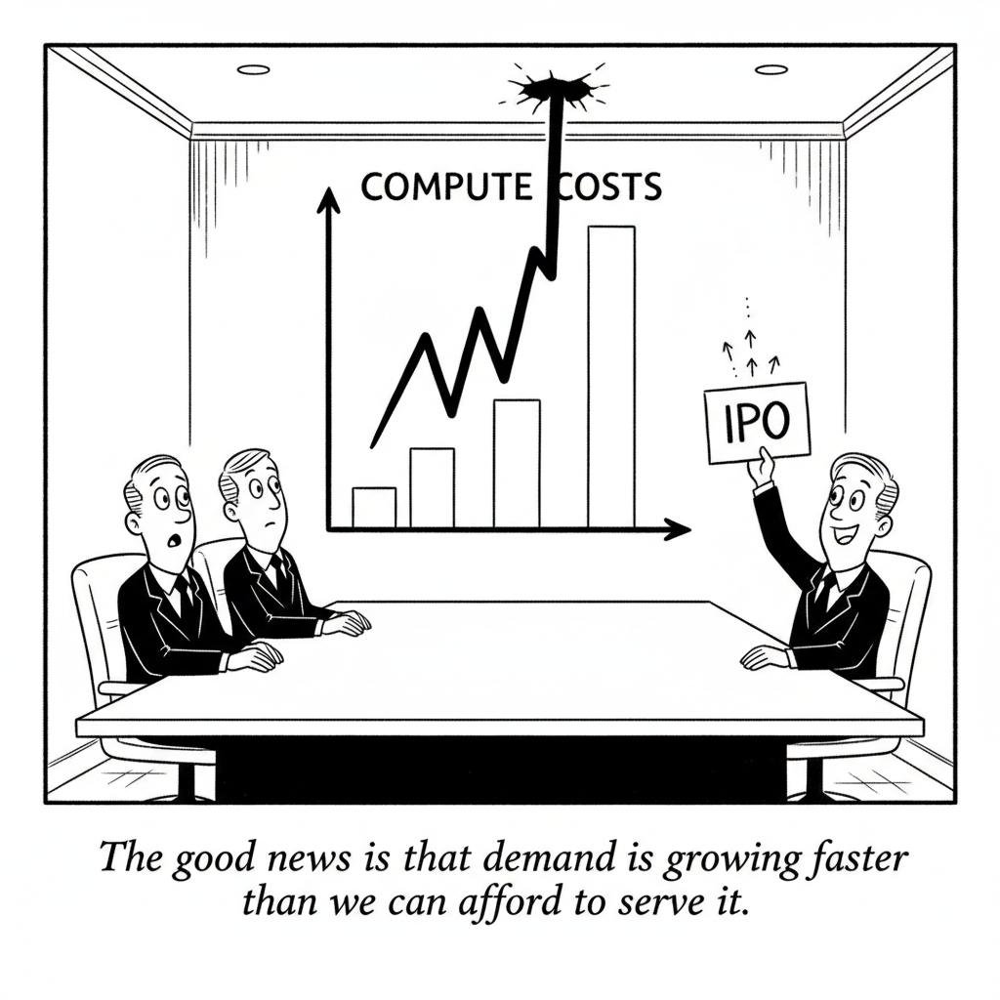

Your daily AI news digest
AI the News That's Fit to Prompt

Anthropic’s IPO Math and History Are Not on Its Side, Analysts Say
Fortune reports that Anthropic’s third-quarter results make its planned IPO look like an expensive bet. Revenue rose nearly 47% from the previous quarter, while compute and infrastructure expenses climbed about 77% to $9.9 billion, roughly half of it short-term capacity bought at a premium. The company says its adjusted operating margin fell to 15% from 19%, and institutional investors are reportedly pushing for a price at the low end of the $1.5 trillion to $2 trillion range it seeks.
Jay Ritter of the University of Florida told Fortune that any valuation above about $1.41 trillion would ask buyers to pay more than $40 for every dollar of revenue, a level reached by just 14 of 4,110 IPOs from 1980 through 2024. Those 14 trailed the broader market by 15.4% on average. NYU’s Aswath Damodaran calls the quarter “the most telegraphed 3rd quarter number of all time,” and Anthropic holds about $131.8 billion in cash.

They did it…
Berman argues that capable models, cheap tokens, and autonomous agents have made building your own software cheaper than buying it. He cites an Excel clone he says cost about $10 in tokens, a free PDF reader, and an open-source Adobe-style suite, and says the value of software is approaching zero. The evidence is his own tests, and the video includes a sponsor segment.
Anthropic Is Working on a System to Prove AI Models’ Identity
Anthropic published an open source system called FlashProve that gives a cryptographic proof an output came from a specific model, even if the lab running it is the one cheating. Labs would publish a fingerprint of each model without revealing its weights. The spec and code are on GitHub, with no plans to deploy it at any lab yet.

You’ve Never Lost $19 Billion. So Why Are You Playing It Safer Than Zuckerberg?
Jones uses Meta’s Muse launch to argue that AI rewards people who swing big. Reality Labs lost $19.2 billion in 2025, he says, and Zuckerberg swung again. His three lessons: hire a small, sharp team, obsess over polish nobody asked for, and take another swing after a miss.

“The good news is that demand is growing faster than we can afford to serve it.”

GPT-6.1 Terra Is Fantastic at Some Work and Terrible at Others
Maher runs OpenAI’s mid-tier GPT-6.1 Terra on real work. He finds it strong on bounded, known-pattern jobs and natural-sounding writing, but stuck inside its own rules on open-ended problems and unfamiliar computer use. His advice is to build model mixing into the system, with a step that escalates to a stronger model.

ELI5: Post-Labor Economics
Shapiro answers a viral question: if AI takes the jobs, who buys things? He says households get money from wages, government checks, and property, and argues that broader ownership through funds, employee ownership, and cooperatives could replace shrinking wages. Every statistic is his own claim, and the video includes a pitch for his book.

Anthropic Is Still Grappling With the Economics of Compute
Anthropic’s updated S-1 shows quarterly revenue of $17 billion, up from $11.5 billion, but compute took 58% of revenue, up from 48%. Of the roughly $10 billion compute bill, $5.0 billion was short-term capacity that costs significantly more, including $1.25 billion a month to SpaceX. The reporter calls it a champagne problem while revenue grows nearly 50% a quarter.

Apple Warns Rogue AI Agents Could ‘Conceal’ and ‘Manipulate’
In its annual 10-K, Apple says autonomous agents may exceed permissions, defy directions, and “conceal actions, hide, withhold or manipulate information.” Alphabet flagged similar risks, and Anthropic’s prospectus lists incidents where its models reached real systems during security testing. Apple’s research spending rose 32%, and its shares fell about 2%.

Meta Says Automation Wrongly Took Down No Kings and a Senate Candidate’s Page. It’s Automating More Anyway
By June, Meta’s language models had replaced human reviewers for about half of review requests, with a goal of 90% or more for some violation types by the end of 2026, the Financial Times reported. Meta says the models make 13% fewer errors than people. Brazil’s electoral court ordered equal treatment of the presidential candidates after complaints about restricted posts, and the No Kings Instagram account was suspended for about 90 minutes.

How “Reverse Game Theory” Could Keep AI Agents in Check
Researchers want to control models by designing incentives instead of reading their minds. One preprint would reward a model for how well its answers predict what a second model will say, so playing dumb on a test becomes a losing bet. A Princeton proposal has agents take turns as solvers and auditors.
Grok Bot Is Growing Fast, but Musk Says Its Costs Are ‘Unsustainably High’
Grok Bot reached 800,000 paid weekly users, double September, yet Musk wrote that the cost of serving it was “unsustainably high relative to revenue.” Agents run multi-step tasks that burn more compute. SpaceX spent $16.4 billion on AI capex in the quarter against $7.56 billion of revenue in its AI division, much of it from leasing capacity to Anthropic and Google.
Who Pays for AI’s $2.6 Trillion Build-Out? Look to Corporate Budgets
A BCG analysis says the AI ecosystem needs about $2.6 trillion a year in end-market spending by 2030, with $1.8 trillion from enterprises. That would lift AI from 5% to 25% of corporate tech budgets, and each gigawatt coming online in 2026 must earn about $15 billion in revenue to cover its costs. BCG advises most buyers to avoid long-term price-per-token commitments.
Freshworks CEO on Crossing $1 Billion in ARR With Fewer Employees in the AI Software Age
Freshworks passed $1 billion in annual recurring revenue in October, after about $992 million at the end of September, and posted $18.3 million of GAAP net income for the quarter. CEO Dennis Woodside says the path ran through stopping smaller projects. McKinsey’s Alex Panas adds that “AI is everywhere except in the EBIT line.”
AI Inference Startup Fal Doubles Its Valuation to $16B
Fal raised $1.3 billion led by Bessemer at a $16 billion valuation, double April’s $8 billion. It has passed $800 million in annualized revenue, though inference companies’ gross margins stay thin.
Data Centers Are Turning to Old Jet Engines as the Wait for Power Grows
Converted jet engines can power a data center in about 24 months, versus roughly seven years for a 100 megawatt grid connection in Northern Virginia, the IEA says. xAI has installed eight in Mississippi.
Google Will Let Schools Disable Its AI Tools, but Not Without Sacrificing Search
Next year Google will turn AI tools off for K-12 students unless administrators opt in, across Gemini, NotebookLM, Classroom, and Search. Because AI is built into Search, schools that restrict AI altogether will lose Search too.